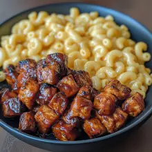

Honey BBQ Chicken Mac and Cheese
Home

Description
A healthy protein packed honey bbq paired with a creamy mac and cheese that only takes around 30-40 minutes to make.
Great for meal prep and easy to make.
Ingredients
- Chicken
- Reduced-Fat Cheeses
- Pasta
- Honey and BBQ Sauce
Steps
- Prepare the ChickenTo start, mix the diced chicken with honey, BBQ sauce, and spices for a flavourful coating. Cook the chicken in the air fryer at 180°C (356°F) for 12-15 minutes, shaking halfway through to ensure even cooking.
- Cook the PastaMeanwhile, bring a large pot of salted water to a boil. Add the pasta and cook according to package instructions until al dente. Drain and set aside.
- Make the Cheese SauceIn a blender, combine the cottage cheese, cream cheese, cheddar, milk, and seasonings. Blend until smooth, then transfer to a saucepan and heat over medium-low heat, stirring until the sauce is creamy and melted.
- Combine and Set, Stir the cooked pasta into the cheese sauce until evenly coated. Let the mac and cheese sit for 10 minutes to thicken. Once set, serve the mac and cheese in bowls and top each portion with the honey BBQ chicken for a flavourful finish.